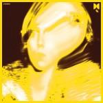
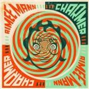
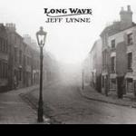
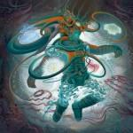

Music Reviews
-
The Hood Internet FEAT
The Hood Internet's first full-length album fails to invoke the same fun-loving party atmosphere found on their remixes and mashups. Instead, FEAT suffers from generic beats and a nasty vibe. In spite of that, there are still a few bright moments to pull from this effort.
Joe Marvilli will take stick with the regular Internet for now.... -

Ty Segall Twins
After a fruitful year of kicking ass and taking names, Ty Segall's final statement of the year, Twins, proves to be an excellent collection of over-driven garage pop scorchers that fully exhibit Ty’s personality and passion for rock and roll glory
Peter Quinton closes the book on Ty Segall's ambitious year with this review of Twins -
Jens Lekman I Know What Love Isn't
Has Jens Lekman delivered the heartbreak album of the year?
David Coleman decides... -

Tall Ships Everything Touching
It's taken Falmouth's Tall Ships five years to release their debut, which remolds the eclectic nature of their past EPs into existentially charged anthems.
Juan Edgardo Rodríguez reaches for the... -
Danny! Payback
Often ignored and dismissed as a copycat of more famous rappers, Danny! signs to ?uestlove's label makes an album in his own style.
James McKenna reviews... -

Tame Impala Lonerism
Tame Impala’s Lonerism displays a tender connection to pop. Drugs not included.
Randi Dietiker reviews... -

Aimee Mann Charmer
The new Aimee Mann albums follows on from her previous albums, not changing her style at all. One for the fans.
James McKenna reviews... -

Jeff Lynne Long Wave
ELO frontman Jeff Lynne is back with two new releases. Confounded by one, I tackle the other.
Alan Shulman reviews -

Coheed and Cambria The Afterman: Ascension
Coheed and Cambria's last album, Year Of The Black Rainbow, was by all intensive purposes a severe misstep. The band embraced odd electronic elements that didn't quite complement the band's punk-meets-prog sound. Two years later, the band has resurfaced with the promise of a "return to form." Were the progressive space-rockers successful in harnessing their old sound?
The answer is a bit complicated....... -

Converge All We Love We Leave Behind
Though already entering their third decade, Converge continue to prove with All We Love We Leave Behind that they are still one of the most visceral, unique, and uncompromising bands in hardcore and heavy metal today
Peter Quinton nearly destroys his vocal chords after reviewing Converge's latest hellspawn opus...